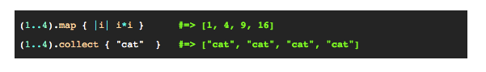
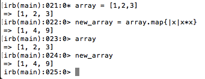

Dev Bootcamp Phase 0
Week 5
January 5, 2016
Another week, another topic! Today I'll be covering map (a ruby method).
Of all the Enumerable methods I could discuss, I chose map because for some reason for the longest time it was the method I had the most trouble remembering existing (and it is so useful!) ---- IMPORTANT NOTE: map and collect in ruby are actually the same! (so array.map{} and array.collect{} are funcationally the same)
So what does map actually do? Map iterates over (or moves through the items in) an array or list of objects and alters them in a way you've defined. Here is an example of how you would use map (or collect) as shown in ruby documentation. See below the image for explanation:
If you reference the above (just map for now) you'll notice a few things:
- (1..4) -- this is the set of objects or the base we want to apply map to
- .map -- our map method!
- { -- the beginning of our block (or where we'll tell the map what to do)
- |i| -- this is where we tell map what to apply our instructions to. 'i' is a placeholder (and could be any random letter, word, gibberish, etc. we want to use) that just indicates we want map to do whatever we tell it to next to each item in that first set of objects.
- i*i -- (finally) our actual instructions. Note you use whatever placeholder you defined between the |'s in the last step. In this case, the example says we want map to multiply each item by itself.
- } -- the closing of our block (to say we've finished!)
- ... AND you'll notice the output is what we might expect: an array of the numbers in 1 through 4, each multiplied by itself.
One thing to note: map is NOT destructive. In other words, map returns an altered array but this array is DIFFERENT than the array or set of items map was applied to (in the example above (1..4) is still (1..4)). So in other words if you wanted to save that new array, you'd need to define it as its own array. I jumped into irb to show that the original array is unchanged and how you might save the map array to a new array and pasted it below:
Map (and collect) are super useful if you need to manipulate a set of items or array in some way and save that array under a new name (maybe to be used later?)
Now go forth and map!